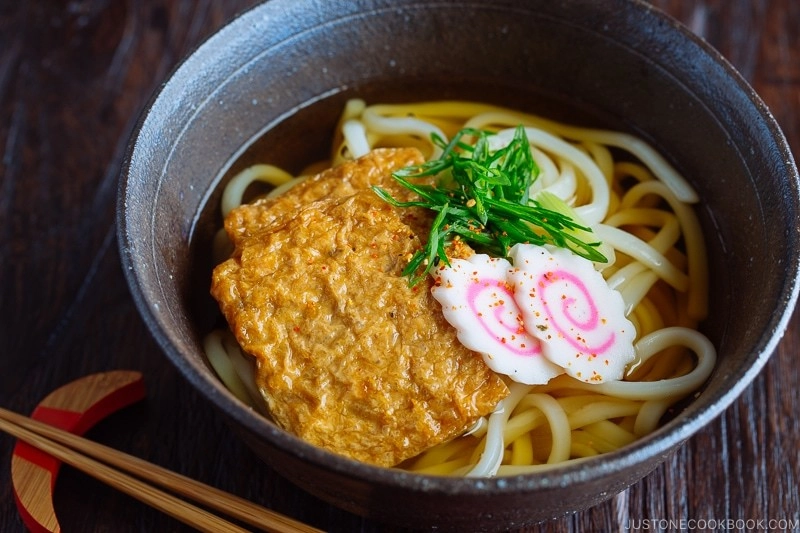

Kitsune Udon

Description
Kitsune Udon is a Japanese noodle soup in dashi broth, topped with seasoned fried tofu (Inari Age), pink-swirled narutomaki fish cake, and scallions. It is the easiest noodle soup to make. Both frozen or dried udon noodles work fine in this recipe.
Ingredients
- 2 ¼ cups dashi
- 1 Tbsp mirin
- 1 tsp sugar
- 1 Tbsp usukuchi (light-colored) soy sauce
- ½ tsp kosher/sea salt
- 2 servings udon noodles
- 4 inari age (seasoned fried tofu pouch)
- 1 green onion/scallion
- 4 slices narutomaki (fish cakes)
- Shichimi Togarashi
- 2 ½ cups water
- 1 kombu (dried kelp)
- 1 ½ cups katsuobushi
Steps
- Gather all the ingredients. Before we start: It's really important to have good flavorful dashi for this recipe. Although you can take the shortcut by using dashi powder or dashi packet, I encourage you to make your own dashi because the broth tastes so much better! It only takes less than 30 minutes to make. For vegetarian/vegan, please use Kombu Dashi.
To Make Homemade Dashi (Please skip if you already have dashi)
- Put the kombu and 2 ½ cup water in a measuring cup for at least 30 minutes. If you have time, soak for 3 hours or up to half a day. Kombu’s flavor comes out naturally from soaking in water. If you don’t have time at all, skip soaking.
- Transfer kombu and water to a saucepan. Slowly bring to a boil over medium-low heat.
- Just before boiling (you will see bubbles around the edges of the pan), remove the kombu. If you leave the kombu inside, the dashi will become slimy and bitter. Now this broth is Kombu Dashi (vegetarian/vegan) and it's ready to make udon soup. For non-vegetarian/vegan, add 1 ½ cups katsuobushi and bring it to a boil again.
- Once the dashi is boiling, reduce the heat, simmer for just 15 seconds, and turn off the heat. Let the katsuobushi sink to the bottom, about 10-15 minutes. Strain the dashi through a fine-mesh sieve set over a saucepan. Now you have roughly 2 ¼ cup dashi.
The rest of setps please refer to here.